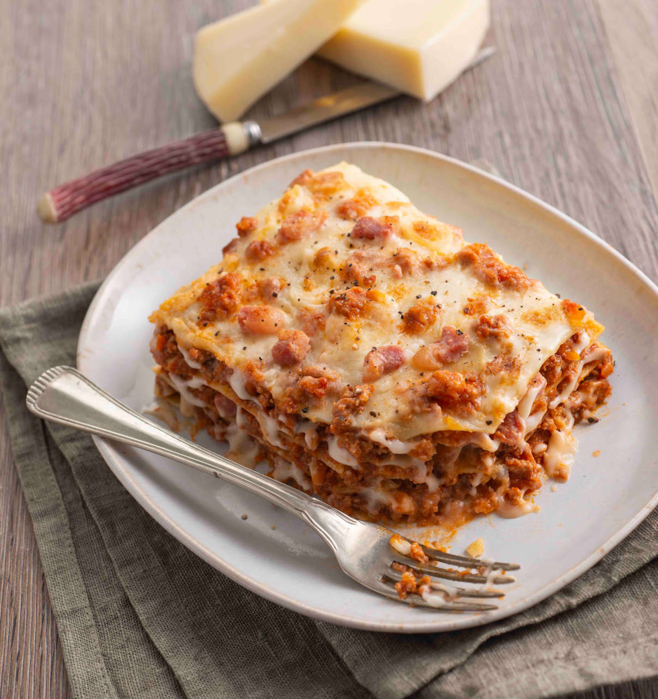

Lasagne

Cosa sono?
Le lasagne sono un tipico piatto italiano formato da sfoglie di pasta, ragù al pomodoro e besciamella. E' anche il piatto preferito di Garfield.
Ingredienti
- Sfoglie di pasta
- Ragù al pomodoro
- Besciamella
Preparazione
- Prendi le sfoglie.
- Prendi il ragù.
- Prendi la besciamella.
Torna alla pagina principale